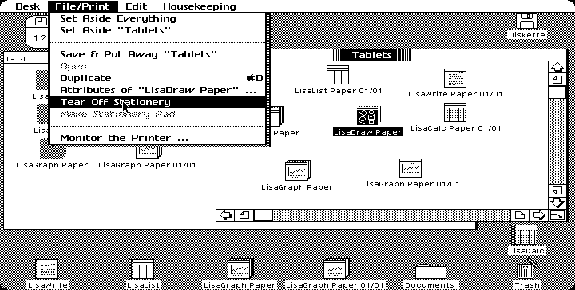

<!DOCTYPE html>
<html lang="en">

<head>
    <meta charset="UTF-8">
    <meta name="viewport" content="width=device-width, initial-scale=1.0">
    <script src="https://aframe.io/releases/1.0.4/aframe.min.js"></script>
    <script src="https://unpkg.com/aframe-event-set-component@3.0.3/dist/aframe-event-set-component.min.js"></script>
    <script src="https://unpkg.com/super-hands@^3.0.1/dist/super-hands.min.js"></script>
    <!-- new version but doesn't contain right physics elements -->
    <!-- <script src="https://cdn.jsdelivr.net/gh/donmccurdy/aframe-extras@v6.1.1/dist/aframe-extras.min.js"></script> -->
    <script src="https://cdn.jsdelivr.net/gh/donmccurdy/aframe-extras@v3.13.1/dist/aframe-extras.min.js"></script>
    <title>cyb3r_spac3</title>
    <!-- <script type='text/javascript'>
        function firstScene() {
            document.getElementById('scene1').setAttribute('visible', 'true')
            document.getElementById('scene2').setAttribute('visible', 'true')
        }
        window.onload = (event) => {
            firstScene();
            console.log('window loaded')
        };

        function nextScene() {
            document.getElementById('scene1').setAttribute('visible', 'true')
            document.getElementById('scene2').setAttribute('visible', 'true')
            console.log('scene has changed')
        }
        setTimeout(nextScene, 6000);
    </script> -->
    <script type='text/javascript'>
        // document.ready(setTimeout(function () {
        //     window.location.href = ‘lisa.html‘;
        // }, 5000));
        window.setTimeout(function () {
            console.log('5 sec');
            window.location.href = "pixel.html";
        }, 30000);
    </script>
</head>

<body>
    <a-scene id='scene1'>

        <a-entity id="rig" rotation="0 90 0" position="-50 0 0">
            <a-camera id="camera"></a-camera>
        </a-entity>
        <a-assets>
            
            <!-- <video id="lisa" autoplay loop="false" src="macbootup.mp4"></video> -->
            <video id="lisa" style="display:none" autoplay crossorigin="anonymous" playsinline webkit-playsinline>
                <!-- MP4 video source. -->
                <source type="video/mp4" src="assets/macbootup.mp4" />
            </video>
            <video id="video" style="display:none" autoplay loop crossorigin="anonymous" playsinline webkit-playsinline>
                <!-- MP4 video source. -->
                <source type="video/mp4" src="assets/extrudedwindows_1.mp4" />
            </video>
        </a-assets>
        <a-video src="#lisa" rotation="0 -90 0" position="0 0 -2"></a-video>
        <a-videosphere src="#video"></a-videosphere>
        <a-entity sound="src: #soundscape"></a-entity>
        <a-entity id="soundscape" geometry="primitive: plane" visible="false" position="-10 0 0"
            sound="src: assets/lisa.mp3; autoplay: true; loop: true;"></a-entity>
    </a-scene>
    <!-- <a-scene id='scene2'>
        <a-assets>
            
            <a-asset-item id="lisa" src="lisaextrusion/lisaextrusion.gltf"></a-asset-item>
            
            <a-asset-item id="mac" src="lisa/scene.gltf"></a-asset-item>
        </a-assets>

        
        <a-camera>
            <a-cursor></a-cursor>
        </a-camera>
        <a-entity id="camera" camera="userHeight: 1.6" look-controls cursor="rayOrigin: mouse"></a-entity>

        <a-sky src="#360photo"></a-sky>
        <a-entity text-entity position="0 1.8 -0.5" text="value: advance forward with keys;
        color: #DDDDDD;
        align: center;
        wrapCount: 15;
        width: 0.5" event-set__down="_event: mousedown; visible: true"
            geometry="primitive: plane; width: auto; height: auto"
            material="color: #DDDDDD; shader: flat; visible: false">
        </a-entity>
        <a-entity link="href: pixel.html; title: My Homepage; image: #indoor">
            <a-entity position="0 1.8 -9" text="value: space is a natural human concept;
        color: #DDDDDD;
        align: center;
        wrapCount: 10;
        width: 0.5" geometry="primitive: plane; width: auto; height: auto"
                material="color: #DDDDDD; shader: flat; visible: false"> </a-entity>
        </a-entity>
        <a-entity gltf-model="#mac" position="0 -1.3 -2" scale="0.005 0.005 0.005" rotation="180 90 180">

        
        </a-entity>
        <a-image src="#lisaimg" scale=".6 .5 .35" position="0 1.61 -1.58" depth="1" rotation="-3 0 0">
        </a-image>
        <a-entity gltf-model="#lisa" position="0 1.35 -1.7" scale="1.2 2 -1" depth="-1" rotation="0 0 0">
            <a-entity gltf-model="#lisa" position="0 0 .25">
                <a-entity gltf-model="#lisa" position="0 0 .25">
                    <a-entity gltf-model="#lisa" position="0 0 .25">
                        <a-entity gltf-model="#lisa" position="0 0 .25" checkpoint></a-entity>
                    </a-entity>
                </a-entity>
            </a-entity>
        </a-entity>
        <a-entity gltf-model="#lisa" position="0 1.35 -1.5" scale="1.4 2.3 1" depth="-1" rotation="0 0 0"></a-entity>
    </a-scene> -->
</body>

</html>